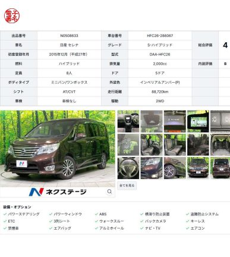
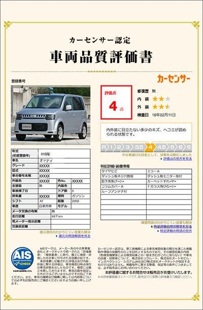

単元14
車選び
この単元のゴール案
お客様と一緒に車を決められる
含む内容：車種決めのトーク、提案の仕方
4-7車選び
- 4-7-1
車の条件
- 可決した信販会社の車両条件を確認する（3章）
- 共通ルール：15年以内、15万km未満、修復歴なし（R点・RA点はNG）、評価点4点以上（4.5点以上を推奨）
- 探す場所：ネクステージの業販サイト、オークション（ワンプライス・セリ）（5章）
- 4-7-2
希望のすり合わせ
- 聞くこと：用途／譲れない条件（軽か普通車、スライドドア、ナビ・バックカメラ、年式・走行距離など）／優先順位（月々の支払額、年式・走行距離、車種・見た目）
- お客様の希望が全部叶うことはない前提で話す。希望を1つ叶えるなら、こちらからも1つお願いを出す（例：「年式を〇〇年まで新しいのをお探しするので、この車両なら月々はここまで頑張っていただきたいです」）
- 御用聞きにならない。ゆっくり、緩急をつけて話す
- 4-7-3
提案の流れ
- 問い合わせ時の希望車が条件に合えば、そのまま提案する
- 別の希望が出たら、電話しながら業販サイトやオークションで探し、スクショをLINEで送って一緒に見る
- 提案は2〜3台に絞る。電話の前に予算内の候補車を頭に入れておく
- 1台ごとに年式・走行距離と「〇〇装備付きで、車検2年、内装仕上げ、3年間の故障保証、陸送など全て込みで月々〇〇円台に収まります」と伝える
- 写真は1台につき3枚ほど。反応がよければ追加で送る。色の認識違いを防ぐため、出品ごとのスクショを送ってよい
- 具体的な希望がないお客様には「例えばの一台で、この車なら月額〇〇で収まります」と写真を送り、反応を見る
- ワンプライスの車は他社に先に買われることがあると伝える
- 4-7-4
渡部社長のポイント
車種提案の比較トーク
- 「ノートe-POWERはどうですか？」は素人の会話。お客様には物差しがないので、何に対してどこがどのくらい良いのか分からない
実はこれ、50プリウスと同じで、新車のときの価格が大体320万円くらいするんですよ。いい意味で高級車くらいの車なんです。ただプリウスはブランドがあったり、海外に多く出たりするので、その分ノートe-POWERは同じ年式・距離でも中古車だとすごくお買い得になるんです。これ、意外と皆さん知らないんですけど
- 燃費の気づかせトーク：
このノートe-POWERはカタログ値で32km/Lと書いてあるんですが、実燃費でも23km/Lくらい走るんです。今まで〇〇さんが乗っていた車はリッター10とか12くらいだと思うので、単純に倍は走ります。例えば月に2万円ガソリンを入れていたなら1万円になるので、それだけで毎月1万円浮く感じになります
- 「燃費がいいですよ」だけではダメ。事前に調べて、何に対してどうおすすめかを話す。そのために車種別勉強会をやる
- 4-7-5
提案のコツ
- 年式を優先して選ぶ：
令和元年の1万kmより、令和3年の5万kmの方がいいと言われています
- 色は白・シルバーの方が台数が多く、状態のいい車が見つかりやすい。黒は台数が少ない
- 仕事用なら、ハイルーフ・キーレスなど決め手を一言添える
- 実燃費はカタログ燃費の6割前後になることが多い。お客様の月の走行距離からガソリン代の差を月額で見せる 参考
- 年式を優先して選ぶ：
- 4-7-6
渡部社長のポイント
車の状態の伝え方（LINE）
- 一言目の例：「高そうですが、かなりいいやつがありました」。「高そう」が入るだけで車の印象が上がる
- 5点満点の何点かを必ず伝える。内装・外装は「A・B・C・D・EのBです」。4.5点なら「かなり綺麗な車です」 図4-D
- 「内装・外装も綺麗で、機関系も非常に問題ない、すごくいい車です」と、機関系も必ず入れる
- 出品票に書いてある装備は全部書く（LEDライト、フォグランプ、バックカメラ、スマートキーなど）。無事故車であることもあえて書く
- 新規のお客様には、乗り換えのお客様より多めに書く

図4-D車両情報の送り方の例（業販サイトの画面） - 4-7-7
渡部社長のポイント
傷の伝え方
- 出品票はそのまま送らず、展開図のスクショを渡す 図4-C
- 送らない場合は必ずトークで先に伝える：
今回は10年落ちの10万kmなので、当然小さい傷はあります。ボンネットやバンパーに飛び石もありますし、横の車のドアがコツンと当たったような小傷も、中古車なので大なり小なりあります。ただ大きな事故やへこみ、誰が見てもおかしいと思うような傷はないので、ご安心ください
- 言わずに送ると、新品のようなピカピカの車が来ると錯覚してクレームになる
- 成約時には車両状態表を必ず渡す（出品票でなくても、手書きでもよい）

図4-C展開図。傷の位置をお客様に伝えるときに使う - 4-7-8
反応がよい車への「特別感」の出し方
実はこのお車、前オーナー様の手入れがすごく丁寧で、同年式の相場と比べても状態が抜群に良い掘り出し物なんです！
〇〇様の『月々〇〇円以内』というご条件と、人気車両で信販会社的にも通しやすい一台です！正直、この条件でこの状態の車はなかなか見つかりません✨
- 「〇〇様のご予算条件だからこそ提案できた」というニュアンスを入れる。煽りすぎない
- 4-7-9
出品票・出品歴の見方
- 総合評価点：6・S（新車に近い）、5、4.5（推奨）、4、3.5以下（NG）、1（冠水歴、NG）、R・RA（修復歴、NG） 図4-A 図4-B
- 傷の記号：A（線傷）、U（凹み）、B（傷を伴う凹み）、W（修理跡の波打ち）、S（サビ）、C（腐食）、P（塗装剥がれ）、X（要交換）、XX（交換済み）
- 修復歴になる部位：フレーム、クロスメンバー、インサイドパネル、ピラー、ダッシュパネル、ルーフ、フロア、トランクフロア、ラジエターコアサポート（交換）
- 注意書き・検査員報告欄、走行距離（メーター交換・走行不明）、車検の残り、展開図は必ず読む
- JUナビで出品歴を確認する。年式の月・型式・グレード・走行距離・展開図の補修歴が一致すれば同じ車。判断は2人以上で
- TAAなどで買った車がUSSに出し直されていれば、何か不具合がある可能性

図4-Aオークション出品票の見本（評価点・装備・検査員報告・展開図） 
図4-BAIS（カーセンサー認定）車両品質評価書の見本 - 4-7-10
NG・要注意の車両
- NG：共通ルール外、信販会社の条件外、冠水車、走行距離不明・メーター交換、改造車
- 要注意：先進安全装置付き（センサー異常は車検に通らず、直すと10万円を超えることも。6-2章）、MT車（免許の確認）、異音・警告灯・臭いの記載、雪国のスタッドレス代
教育担当者のチェック
押すと印が付きます。この端末のブラウザにだけ保存されます。正式な記録は印刷したチェックリストに書いてください。